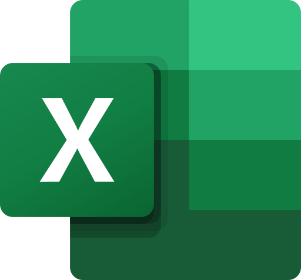
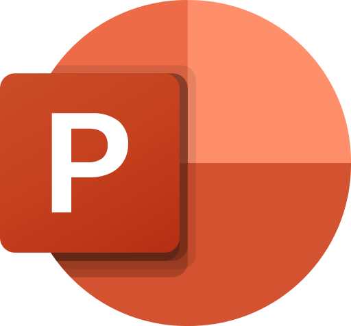

Microsoft Office nima va u nima uchun kerak?
Microsoft Office — Microsoft kompaniyasi tomonidan yaratilgan, ofis ishlari uchun mo‘ljallangan amaliy dasturlar paketi (to‘plami). “Office” so‘zi inglizcha “idora, ish joyi” degan ma’noni bildiradi.
Dasturlar paketi deganda nima tushuniladi?
Dasturlar paketi — bitta kompaniya tomonidan yaratilgan, birgalikda o‘rnatiladigan va bir-biri bilan ishlay oladigan dasturlar to‘plami.
5-darsda o‘rganganimizdek, dasturiy ta’minot tizimli, amaliy va uskunaviy turlarga bo‘linadi. Office — amaliy dasturlar paketi: u foydalanuvchining kundalik ishini (hujjat, jadval, taqdimot) bajaradi.
Nega alohida dasturlar emas, aynan paket?
- Bir xil ko‘rinish. Word’ni o‘rgangan odam Excel va PowerPoint’da ham tez ishlay boshlaydi.
- Ma’lumot almashish. Excel jadvalini Word hisobotiga, diagrammani taqdimotga bemalol qo‘yish mumkin.
- Umumiy tezkor tugmalar. Ctrl + S, Ctrl + C barcha dasturlarda bir xil ishlaydi.
- Bitta litsenziya. Paket bir marta o‘rnatiladi va barcha dasturlar birga yangilanadi.
Tibbiyot muassasasida Office qayerda ishlatiladi?
Office paketiga kiruvchi dasturlar
Har bir dasturning o‘z vazifasi, fayl kengaytmasi va ishga tushirish buyrug‘i bor. Buyruqni Win + R oynasiga yozib Enter bossangiz, dastur darhol ochiladi.

Word
Matn muharriri (protsessori)Matnli hujjatlarni yaratish, tahrirlash, bezash va chop etish. Jadval, rasm va ro‘yxatlar qo‘shish.

Excel
Elektron jadvalKatakchalardan iborat jadvallar, formulalar yordamida hisob-kitob, saralash, filtrlash va diagrammalar.

PowerPoint
TaqdimotlarMatn, rasm, diagramma va videodan iborat slaydlar tayyorlash va ularni ekranda namoyish qilish.
Outlook
Pochta va kalendarElektron xatlar yuborish va qabul qilish, kalendar (uchrashuvlar, eslatmalar), kontaktlar va vazifalar.
Access
Ma’lumotlar bazasiKatta hajmdagi bog‘langan ma’lumotlarni jadvallar, so‘rovlar, formalar va hisobotlar ko‘rinishida saqlash.
OneNote
Elektron daftarQaydlar, rasmlar, ro‘yxatlar va qo‘lda chizilgan yozuvlarni daftar → bo‘lim → sahifa tartibida saqlash.
Teams
Jamoa bilan ishlashVideoqo‘ng‘iroqlar, onlayn yig‘ilishlar, guruh chatlari va fayllarni birgalikda ishlash.
OneDrive
Bulutli xotiraFayllarni internetdagi xotirada saqlash. Hujjat istalgan kompyuter yoki telefondan ochiladi, havola orqali ulashiladi.
Office versiyalari va tarqatilish turlari
Office 30 yildan ortiq vaqt davomida rivojlanib keladi. Kompyuterlarda turli versiyalar uchraydi, shuning uchun ularning asosiy farqlarini bilish foydali.
.doc, .xls, .ppt formatida saqlanardi..docx, .xlsx, .pptx formatlari joriy qilindi.Office qanday ko‘rinishlarda tarqatiladi?
| Turi | Qanday olinadi | Afzalligi | Kamchiligi |
|---|---|---|---|
| Office 2021 / 2024 | Bir marta sotib olinadi | Doimiy ishlaydi, internet shart emas | Yangi imkoniyatlar qo‘shilmaydi |
| Microsoft 365 | Oylik yoki yillik obuna | Doim eng yangi versiya, OneDrive’da katta joy | Obuna to‘lovi to‘xtasa, tahrirlash cheklanadi |
| Office onlayn | Bepul, Microsoft hisobi orqali | Brauzerda ishlaydi, o‘rnatish shart emas | Internet kerak, imkoniyatlari kamroq |
| Telefon ilovalari | Play Market / App Store | Hujjatni yo‘lda ko‘rish va tahrirlash | Kichik ekran, katta hujjatga noqulay |
Barcha Office dasturlari uchun umumiy narsalar
Word, Excel va PowerPoint oynalari bir xil qoliplarga ega. Faqat o‘rtadagi ish maydoni farq qiladi: Word’da — varaq, Excel’da — katakchalar, PowerPoint’da — slayd.
Fayl menyusi
Hujjatning o‘zi bilan ishlash: Yaratish, Ochish, Saqlash, Boshqacha saqlash, Chop etish, Yopish, Hisob, Parametrlar. Barcha dasturlarda bir xil.
Lenta (Ribbon)
Buyruqlar yorliqlar va guruhlarga ajratilgan panel. Bosh sahifa (Home / Главная) va Qo‘yish (Insert / Вставка) yorliqlari hamma dasturda bor.
Tezkor kirish paneli
Sarlavha qatoridagi kichik panel: Saqlash, Bekor qilish, Qaytarish. Unga o‘zingizga kerakli buyruqlarni qo‘shish mumkin.
Sarlavha qatori
Oynaning eng yuqori qismi: fayl nomi va dastur nomi (masalan, “Hisobot — Word”), oynani yig‘ish, kattalashtirish va yopish tugmalari.
Holat qatori
Oynaning eng pastki qatori: sahifa yoki slayd raqami, so‘zlar soni yoki yig‘indi, ko‘rinish rejimlari va masshtab (zoom).
Bosh oyna (Start ekrani)
Dastur ochilganda chiqadigan oyna: Yangi bo‘sh fayl, tayyor shablonlar va so‘nggi ochilgan fayllar ro‘yxati.
Barcha Office dasturlarida ishlaydigan tezkor tugmalar
Office dasturlarining birgalikda ishlashi
Paketning eng katta afzalligi — dasturlar bir-biriga ma’lumot uzata oladi. Misol: bosh hamshira oylik hisobotni to‘rt qadamda tayyorlaydi.
Excel’da hisoblash
Word’da hisobot
PowerPoint’da taqdimot
Outlook’da yuborish
Office fayllarining kengaytmalari va muqobil dasturlar
Kengaytmaning oxiridagi x harfi faylning 2007-yildan keyingi yangi formatda saqlanganini bildiradi. Eski formatdagi fayllar ham yangi Office’da ochiladi.
| Dastur | Yangi format (2007+) | Eski format (97–2003) | Shablon |
|---|---|---|---|
| Word — hujjat | .docx | .doc | .dotx |
| Excel — kitob (jadval) | .xlsx | .xls | .xltx |
| PowerPoint — taqdimot | .pptx | .ppt | .potx |
| Access — ma’lumotlar bazasi | .accdb | .mdb | — |
Office’ning muqobil (o‘xshash) dasturlari
| Paket | Matn | Jadval | Taqdimot | Xususiyati |
|---|---|---|---|---|
| Microsoft Office | Word | Excel | PowerPoint | Eng keng tarqalgan, pullik |
| LibreOffice | Writer | Calc | Impress | Mutlaqo bepul, .docx ni ham ochadi |
| Docs | Sheets | Slides | Bepul, brauzerda ishlaydi, internet kerak | |
| WPS Office | Writer | Spreadsheets | Presentation | Kompyuter va telefon uchun, Office’ga o‘xshash |
Qaysi dasturni tanlaysiz?
Har bir vaziyat uchun eng mos Office dasturini tanlang. Javob darhol tekshiriladi va izoh beriladi.
Nazorat savollari va javoblari
Savol ustiga bosing, javobi ochiladi. Avval javobni o‘zingiz eslashga harakat qiling, so‘ng tekshiring.